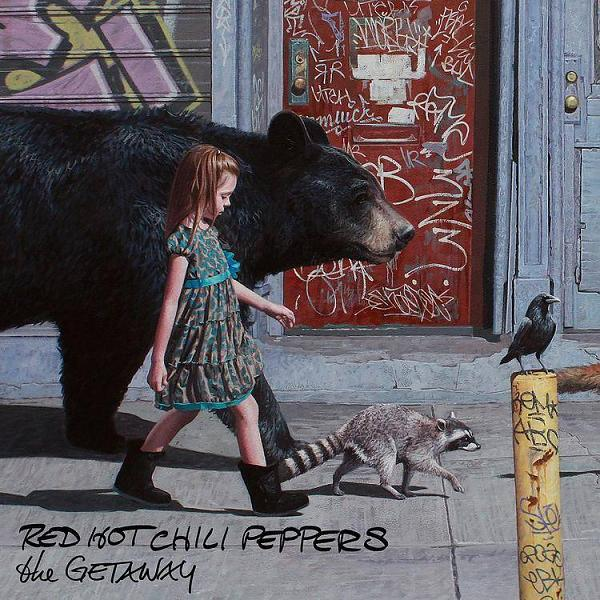
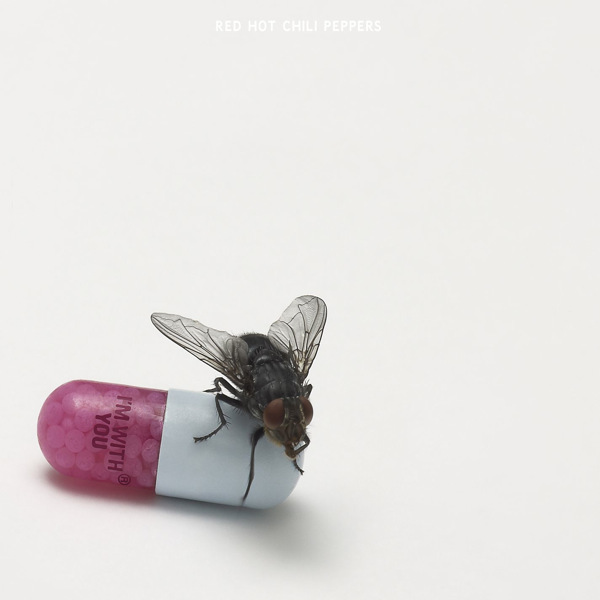
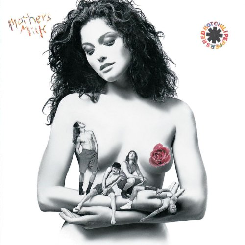
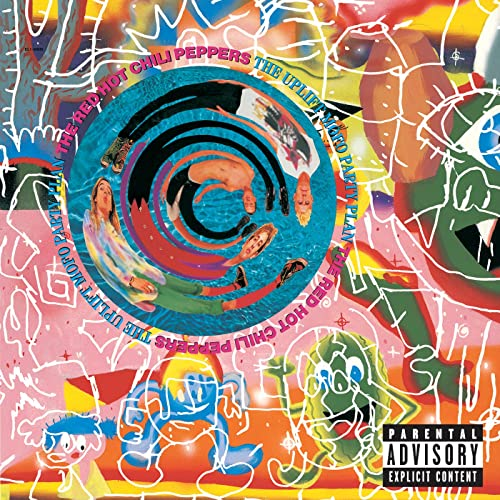
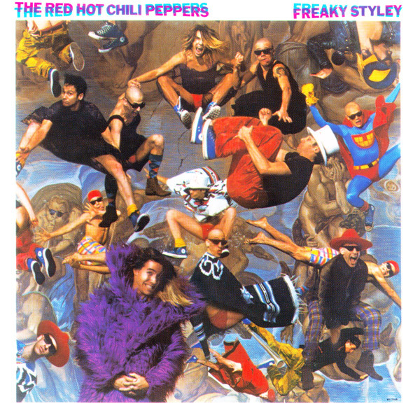
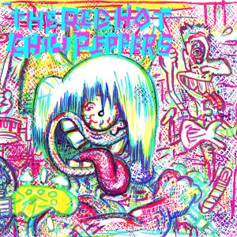

Discografía
Actualmente la banda cuenta con 11 discos, el último de ellos lanzado en 2016. A continuación un listado con toda la discografía
The Getaway (2016)
The Getaway —en español: La Fuga— es el undécimo álbum de estudio de la banda de rock estadounidense Red Hot Chili Peppers, lanzado al mercado el 17 de junio de 2016. Es el primer álbum de la banda en ser producido por Danger Mouse, haciendo de este también su primer disco desde Mother's Milk de 1989 en no estar bajo la producción de Rick Rubin. Además, este es el segundo y último trabajo discográfico que el grupo grabó junto al guitarrista Josh Klinghoffer, tras haber lanzado con él I'm with You en el año 2011. The Getaway fue anunciado el 5 de mayo de 2016 junto al lanzamiento del primer sencillo, «Dark Necessities».
I'm with You (2011)
I'm with You —en español: Estoy contigo— es el décimo álbum de estudio de la banda de rock estadounidense Red Hot Chili Peppers, lanzado en Europa el 26 de agosto de 2011 y posteriormente en Estados Unidos y alrededor del mundo el 30 de agosto de 2011. Debutó en la posición #1 del Billboard 200.2 Producido por Rick Rubin, es el primer disco de estudio con el guitarrista Josh Klinghoffer, reemplazando a John Frusciante, quien abandonó la banda en 2009. Su anterior disco, Stadium Arcadium, fue lanzado en 2006, haciendo de esta la mayor cantidad de tiempo entre un disco y otro en la historia de la banda (más de cinco años).
Stadium Arcadium (2006)
El álbum fue generalmente aclamado por la crítica por integrar diferentes estilos musicales con los que la banda ha ido evolucionando con el paso del tiempo.4 El álbum ganó cinco de los siete premios Grammy a los que aspiraba en 2007, incluyendo el de Mejor Canción de Rock (por Dani California) y Mejor Álbum de Rock.5 Este es el disco con más nominaciones en la historia de la banda. Kiedis atribuyó el éxito del álbum a la mejor dinámica del grupo, diciendo que "la química de la banda, cuando se trata de escribir, es mejor que nunca.

By the Way (2002)
By the Way —en español: Por cierto— es el octavo álbum de estudio de la banda estadounidense de rock alternativo Red Hot Chili Peppers, lanzado el 9 de julio de 2002 por Warner Bros. Records. Este vendió más de 282 000 copias en la primera semana, y alcanzó el puesto dos en el Billboard 200.12 Las canciones del álbum incluyen «By the Way», «The Zephyr Song», «Can't Stop», «Dosed» y «Universally Speaking». El contenido lírico de By the Way difiere de los álbumes anteriores de los Chili Peppers debido a un acercamiento más sincero y reflexivo por parte del vocalista Anthony Kiedis a sus letras.

Californication (1999)
Californication es el nombre del séptimo álbum de estudio de la banda estadounidense de rock alternativo y funk rock Red Hot Chili Peppers. Rick Rubin lo produjo y Warner Bros. Records lo lanzó al mercado el 8 de junio de 1999. El álbum marcó el regreso de John Frusciante como guitarrista en reemplazo de Dave Navarro, lo que resultó en un cambio de estilo de la banda hacia un sonido radicalmente diferente al producido en el álbum previo One Hot Minute (1995).

One Hot Minute (1995)
One Hot Minute —en español: Un Minuto Caliente— es el sexto álbum de estudio de la banda estadounidense de funk rock Red Hot Chili Peppers, lanzado el 12 de septiembre de 1995 por Warner Bros. Records. El éxito mundial del anterior álbum de la banda, Blood Sugar Sex Magik, hizo que el guitarrista John Frusciante no se sintiera cómodo con su nuevo estatus, y abandonara posteriormente el tour de 1992 y a la banda, en el mismo año

Blood Sugar Sex Magik (1991)
Blood Sugar Sex Magik es el quinto álbum de estudio de la banda estadounidense de funk rock Red Hot Chili Peppers, lanzado el 24 de septiembre de 1991. Producido por Rick Rubin, fue la primera grabación de la banda lanzada por Warner Bros. Records. Los estilos musicales de Blood Sugar Sex Magik difieren notablemente de las técnicas empleadas en el álbum anterior de los Chili Peppers, Mother's Milk, y contiene un pequeño uso de riffs de guitarra de heavy metal.

Mother's Milk (1989)
Mother's Milk —en español Leche Materna— es el cuarto álbum de estudio de la banda californiana Red Hot Chili Peppers. Producido por Michael Beinhorn, quien ya había trabajado con el grupo en su anterior álbum (The Uplift Mofo Party Plan), fue lanzado al mercado el 16 de agosto de 1989 bajo el sello de la compañía EMI. Han sido vendidas más de dos millones de copias de este disco, consiguiendo el estatus de disco de platino y convirtiéndose en el primer gran éxito comercial de la banda.
The Uplift Mofo Party Plan (1987)
The Uplift Mofo Party Plan es el tercer álbum de estudio de los Red Hot Chili Peppers, lanzado en 1987 por EMI. Es el único álbum en el que participan los miembros originales de la banda formada en 1983 por Anthony Kiedis, Flea, Hillel Slovak y Jack Irons. Después de su lanzamiento, Hillel Slovak murió de sobredosis, y Jack Irons abandonó la banda. Uno de los sencillos, Fight Like a Brave, está dedicado a la lucha contra la heroína.
Freaky Styley (1985)
Freaky Styley es el segundo álbum de la banda californiana Red Hot Chili Peppers, lanzado el 16 de agosto de 1985 por la discográfica EMI. El nombre del álbum se origina en una frase comúnmente usada en los 80s para describir cualquier cosa como "freaky styley".
The Red Hot Chili Peppers (1984)
The Red Hot Chili Peppers es el álbum debut homónimo de los Red Hot Chili Peppers, lanzado el 10 de agosto de 1984 bajo la discográfica EMI/Capitol Records. El álbum fue producido por el guitarrista de Gang of Four, Andy Gill, y es el único álbum en el que participa el guitarrista Jack Sherman.
